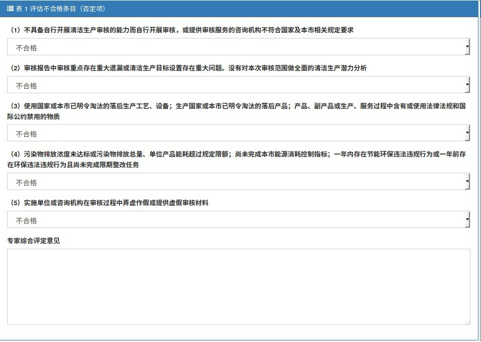

清洁生产管理系统填报使用说明
2.4 专家复审
进入“我负责的评估”页面，点击“小天平”按钮，点击“查看”，在“审核评估信息”中下载审核单位修改后的“审核评估报告”，点击“返回”。
根据审核单位的“审核评估报告”，来选择是否通过专家复审。
根据审核单位“审核评估报告”和说明，在评估条目中选择是否合格，并给予专家综合评定意见。
专家评分。

点击“保存”，“下载”报表，专家签字确认后，扫描文件。
点击“下一步”，“选择文件”，勾选“我保证上传文件的真实性”，点击“提交”。
“下一步”后，所有信息不能更改。
专家评审结束。